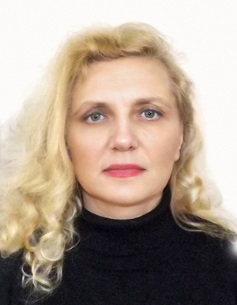

Віце-академік Академії технічних наук України (диплом АТНУ №401)
Гарант ОПП 122-«Комп’ютерні науки»
Камєнєва Алла Вікторівна
кандидат технічних наук, доцент
Основні публікації:
Індексовані в Scopus чи Web of Science:
- Kamieniev K., Kamienieva A., Lisitsyna I. Modern solutions and approaches to application scaling // Slovak international scientific journal ISSN 5782-5319, # 88, (2024), P. 7 – 13. (Index Copernicus)
- Lesechko O., Latysh O., Kamienieva A. Models of mechanical systems preserving the Weyl tensor AIP Conference Proceedings. 2019. Vol. 2164. P. 04002-1 – 04002-7.
- Kamieniev K., Kamienieva A., Tsymbal M. Construction of a mathematical model and a method for arranging hazardous cargoes on a containership Eastern-European Journal of Enterprise Technologies ISSN 1729-3774. 2019. Vol. Control processes 6/3 (102) P. 20 – 27. DOI: 10.15587/1729-4061.2019.183385
- Kiosak V., Savchenko A., and Kamienieva A. Geodesic mappings of compact quasi-Einstein spaces with constant scalar curvature AIP Conference Proceedings. 2020. .Vol. 2302. P. 040002-1 – 040002-7.
- Kamienieva A., Gudyreva O., Bykova S. On special pseudo-Riemannian spaces/ AIP Conference Proceedings. 2022. 2522, 120002.
У наукових виданнях, включених до переліку наукових фахових видань України:
- Гунченко Ю.О., Камєнєв К.І., Камєнєва А.В., Зуй О.М. Інформаційна система для завантаження контейнерного судна з урахуванням структурних та операційних обмежень // Збірник наукових праць Військового інституту Київського національного університету імені Тараса Шевченка. К.: ВІКНУ, 2023. № 78, - с. 47-54.
- Каменев К. И., Каменева А.В., Цымбал Н. Н. Разработка математической модели для задачи бей-плана с учетом очередности загрузки контейнеров. Судноводіння | Shipping & Navigation ISSN 2306-5761 | 2618-0073. С. 34-45.
- В.С. Михайленко, А.В. Камєнєва, С.А. Стукалов, О.М. Зуй. Моделювання нейромережевої системи ідентифікації та керування параметрами технічного об’єкта // Системні технології ISSN 1562-9945, т. 3 (146). – Дніпро: УДУ науки і технологій, - с. 10-22.
Тези доповідей:
- Leseсhko O., Latysh O., Kamienieva A.Models of Mechanical Systems Preserving the Weyl Tensor. Book of abstracts of Eleventh International Conference on Application of Mathematics in Technical and Natural Sciences, (20 – 25 June 2019). Albena, Bulgaria. – Euro-American Consortium for Promoting the Application of Mathematics in Technical and Natural Sciences. Р. 37
- Kiosak V., Savchenko A., Kamienieva A. Geodesic Mappings of Compact Quiasy-Einstein Spaces with constant scalar curvature. Book of abstracts of Twelfth International On-Line Conference on Application of Mathematics in Technical and Natural Sciences (24 – 29 June 2020). San Diego. – Euro-American Consortium for Promoting the Application of Mathematics in Technical and Natural Sciences. Р. 73
- Kamieniev K., Kamienieva A. Automation of constraints creation for master bay plan problem. Slovak international scientific journal ISSN 5782-5319. 2020. Vol. 2 (45). P. 19 – 23
- Gudyreva O., Kamienieva A., Bykova S. Kähler Generalized Ricci Recurrent Spaces. Book of abstracts of Thirteenth International Hybrid Conference on Application of Mathematics in Technical and Natural Sciences, (24−29 June 2021). Albena. 2021.P. 36
- Михайленко В. С., Камєнєва А. В., Мартинович Л. Я. Інформаційні технології у наукових дослідженнях. – Тези докл. Всеукр. наук.-практ. конф. «Інформаційні технології та інженерія». - Миколаїв: ЧНУ імені Петра Могили, 2023. – с. 130-131.
Підручники, навчальні посібникі:
- Kamienieva A.V., Kamieniev K.I. Information technologies: textbook – Одеса: НУ «ОМА», 2020. 118 с.
- Камєнєва А. В., Хнюнін С.Г. Інформаційні технології в менеджменті: навчальний посібник. Одеса: НУ «ОМА», 2019. 255 с.
- Камєнєва А.В., Хнюнін С.Г., Камєнєв К.І. Пакети прикладних програм в інформаційних технологіях: навчальний посібник. Одеса: НУ «ОМА», 2021. 284 с.
Навчально-методичні посібникі:
- Кaмєнєвa А.В., Зуй О.М., Зудіхін Є.О. Програмне забезпечення мобільних пристроїв. Частина 1. // Методичні вказівки до лабораторних робіт для здобувачів першого (бакалаврського) рівня вищої освіти, спеціальностей 122 "Комп'ютерні науки", 123 "Комп'ютерна інженерія", 151 "Автоматизація та комп'ютерно-інтегровані технології"Методичні вказівки до лабораторних робіт для здобувачів першого (бакалаврського) рівня вищої освіти, спеціальностей 122 "Комп'ютерні науки", 123 "Комп'ютерна інженерія", 151 "Автоматизація та комп'ютерно-інтегровані технології" – 2024. – Одеса: Видавництво: Олді+, – 68 с. Електронне видання, режим доступу
- Кaмєнєвa А.В., Зуй О.М., Зудіхін Є.О. Програмне забезпечення мобільних пристроїв. Частина 2. // Методичні вказівки до лабораторних робіт для здобувачів першого (бакалаврського) рівня вищої освіти, спеціальностей 122 "Комп'ютерні науки", 123 "Комп'ютерна інженерія", 151 "Автоматизація та комп'ютерно-інтегровані технології"Методичні вказівки до лабораторних робіт для здобувачів першого (бакалаврського) рівня вищої освіти, спеціальностей 122 "Комп'ютерні науки", 123 "Комп'ютерна інженерія", 151 "Автоматизація та комп'ютерно-інтегровані технології" – 2024. – Одеса: Видавництво: Олді+, – 58 с. Електронне видання, режим доступу
- Методичні рекомендації з навчальної дисципліни Веб-технології та Веб-дизайн /Д.В. Лазарєва, А.В. Камєнєва, О.С. Шиляєв. Одеса: ОДАБА, 2022. 18 с.
- Kamienieva А., Popovskii A., Khniunin S. Creating a Database in Microsoft Access: textbook Odessa: NU "OMA"», 2022. 68 p.
- Поповський О.Ю., Удолатій В.Б., Кaмєнєвa А.В. Теорія автоматичного управління // Методичні вказівки для виконання лабораторних робіт – 2023. – Одеса: НУ «ОМА», центр «Видавінформ», – 63 с.
Діяльність за спеціальністю:
Підвищення кваліфікації, сертифікати:
- «Соцмережі для освітян та науковців» ОНУ імені І.І. Мечникова 13 липня 2023р.-12 серпня2023р. обсяг 180год, 6 кредитів ЄКТС (Сертифікат № 11-25-2023 від 12.08.2023р.) Наказ № 2111-81 від 6.10.23
Дисципліни, що викладає:
- Веб-технології, веб-дизайн та комп'ютерна графіка Робоча програма; Силабус
- Структури даних та алгоритми Робоча програма; Силабус
- Кросплатформене програмування Робоча програма; Силабус
- Організація баз даних та знань Робоча програма; Силабус